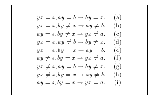

準群問題は、CMGTPで最も成功した事例である。 CMGTPにおける制約伝搬機能を説明する都合上からも まず準群問題について簡単に説明する。 なお、準群問題に関する詳しい説明や今までにとられてきた アプローチについては[SH95]などを参照されたい。
準群(Quasigroup)
有限集合 Q と Q 上の二項演算 ○ に対し、 Q の任意の元 a,b,c に関して以下が成り立つとき、 ＜Q, ○＞ は準群であるという。
この二項演算 ○ による掛算テーブルは よく知られたラテン方陣(ラテン方陣の例) を構成する。
準群の上の定義は、「各行各列には同じ元が2度以上現れない方陣」、 あるいは「各行各列がそれぞれ Q の元の置換 (permutation) によって 構成される方陣」と言い換えることができる。
また、準群 ＜Q, ○＞ が条件
を満足する時、その準群はベキ等であるといわれる。 上の例に示されるラテン方陣はベキ等準群である。 準群問題(Quasigroup Problems)
準群に対してある制約を付加し、それらを満たす準群、すなわちラテン方陣 が存在するかという問題を準群問題という。 準群問題には、追加する制約によっていくつかの種類があるが、 たとえば、QG5 と呼ばれる問題では、以下のような制約が新たに 準群の制約に対して追加される。
上のラテン方陣はQG5の条件を満足するので、 少なくともQG5はオーダ5において1つのベキ等モデルを有することがわかる。 現在多くの準群問題が未解決問題として残されており、 例えば、QG5においては、オーダ n (n > 16) はすべて未解決問題となっている。
準群問題において必要とされるべき制約伝搬についてまとめよう。
以下は、 QG5において必要とされる制約伝搬ルールを前向き推論形式で記述したものである。

ルール(a)は、任意の x, y, a, b に対して、 yx=a, ay=b が成り立つならば、by は x でなければならないことを 表しており、(b)(c)はルール(a)の対偶をとることによって得られる。 これらのルールは負の情報からの制約伝搬を行なう際に必要とされるが、 その意味するところは直観的に明らかであろう。 また、ルール(d)(g)は、準群の定義によりルール(a)より導かれるものである。 ルール(e)(f)はルール(d)の、またルール(h)(i)はルール(g)の対偶 としてそれぞれ導かれるものである。
オリジナルのMGTPでは、ある枝における探索の終了は、
p(Y,X,A),p(A,Y,B),p(B,Y,C),C ≠ X → false
という棄却ルールによって検出していたので、 負の情報を用いた候補の枝刈りを事前に行なうことができず、 結果として、過剰に不必要な枝を探索していた。 しかし、実際には負の情報から制約を伝搬させることによって、 あらかじめ有り得ない候補を枝刈りしておくことができる。